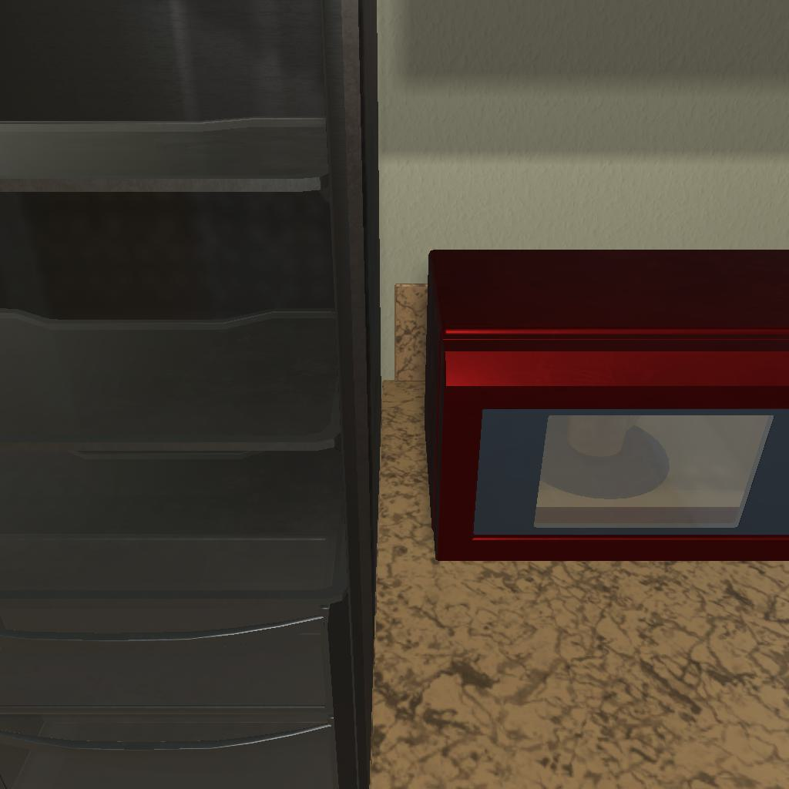

---------------------------------------------------------task: 18---------------------------------------------------------
--------------------------------------------------------------------------------------------------------------------------------------------------------------------
--------------------------------------------------------------------------------------------------------------------------------------------------------------------
Step:--------------------------------------------------------------------------16-------------------------------------------------------------------------------
----------------------------------------
VLM Prompt:
Image1:
**Instruction**
1. Analyze the provided image to identify all visible household objects, focusing on those relevant to the task description "cool some pot and put it in cabinet."
2. Use the analysis of the image and the task hint "The agent must find an object of the desired type, pick it up, go to a fridge, cool the object with the fridge, then find the correct location to place it, and put it down there. The agent does not need to use the fridge button or open the fridge to cool the object, and the agent just needs to do action that is "cool the object with the fridge"." to answer the question: what is the most reasonable action in the choices for the task description "cool some pot and put it in cabinet"?
4. Decide and write the answer using the template: The answer is: (i): , where i is the real number. If there is no desired object in the image, search every place based on **Initial Observation** to find the object. And if no one is exactly correct, choose a similar answer.
**Initial Observation**
You are in the middle of a room. Looking quickly around you, you can see cabinet (1-20), countertop (1-3), coffeemachine (1), toaster (1), sink (1), fridge (1), microwave (1), garbagecan (1), drawer (1-3), sinkbasin (1), stoveburner (1-4), shelf (1-3)
**Answer Choices**
(1): go to cabinet 1
(2): go to cabinet 2
(3): go to cabinet 3
(4): go to cabinet 4
(5): go to cabinet 6
(6): go to countertop 1
(7): go to coffeemachine 1
(8): go to cabinet 7
(9): go to toaster 1
(10): go to cabinet 8
(11): go to sink 1
(12): go to microwave 1
(13): go to garbagecan 1
(14): go to cabinet 9
(15): go to cabinet 10
(16): go to countertop 2
(17): go to cabinet 11
(18): go to cabinet 12
(19): go to drawer 1
(20): go to countertop 3
(21): go to drawer 2
(22): go to cabinet 13
(23): go to sinkbasin 1
(24): go to cabinet 14
(25): go to drawer 3
(26): go to stoveburner 1
(27): go to stoveburner 2
(28): go to stoveburner 3
(29): go to cabinet 15
(30): go to stoveburner 4
(31): go to cabinet 16
(32): go to cabinet 17
(33): go to cabinet 18
(34): go to cabinet 19
(35): go to cabinet 20
(36): go to shelf 1
(37): go to shelf 2
(38): go to shelf 3
(39): close fridge 1
(40): take nothing from fridge 1
(41): examine fridge 1
**Answer**
Let's think step by step by following the instructions.
----------------------------------------
----------------------------------------
Original Response:
Firstly, the task involves cooling an object (pot) with a fridge and then putting it in a cabinet. The image shows a red cabinet that is likely a fridge given its appearance and proximity to the countertop, which is a common kitchen setup.
Based on the Initial Observation, there is only one fridge in the room, and the task does not require using the fridge button or opening it. So the agent will not perform actions related to opening or examining the fridge.
The image does not show a pot or any other objects except for the fridge (red cabinet) and the countertop. Since the task is to cool a pot, the agent needs to first find the pot. However, there are no instructions on where to find the pot, so we must search based on the Initial Observation.
Given that cooling the object with the fridge is part of the task, the most reasonable action would be to go to the fridge first. However, since the task does not require the agent to interact with the fridge directly, options 39, 40, and 41 can be eliminated.
The remaining actions involve going to various cabinets, countertops, and other appliances, none of which are directly related to cooling the pot with the fridge. Since the image does not show the pot, we must assume it is in a location not visible in the image and, thus, not one of the provided answer choices.
Based on this analysis, none of the answer choices directly address the task of cooling a pot with the fridge and then putting it in a cabinet. The agent would need to search for the pot first, which is not an option listed. However, if we were to choose the closest action to starting the task, it would be to approach the fridge since it is the only object related to the task visible in the image.
The answer is: (40): take nothing from fridge 1.
----------------------------------------
----------------------------------------
>>> Refine Original VLM Response and Get Pure Action: take nothing from fridge 1
----------------------------------------
-----------------------------------------------------------------
Running time: 22.356380939483643 seconds
Total Money: 6.305700000000002
-----------------------------------------------------------------
-----------------------------------------------------------------
Text Observation:Nothing happens.
-----------------------------------------------------------------
UNSUCCEED